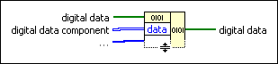

Build Digital Data Function
Owning Palette: Digital Waveform VIs and Functions
Requires: Base Development System
Builds digital data or modifies existing digital data. If you do not wire the digital data input, the function creates new digital data based on the components you wire. If you wire the digital data input, the function modifies the digital data based on the components you wire.
You can use this function to build digital tables.

 Add to the block diagram Add to the block diagram |
 Find on the palette Find on the palette |